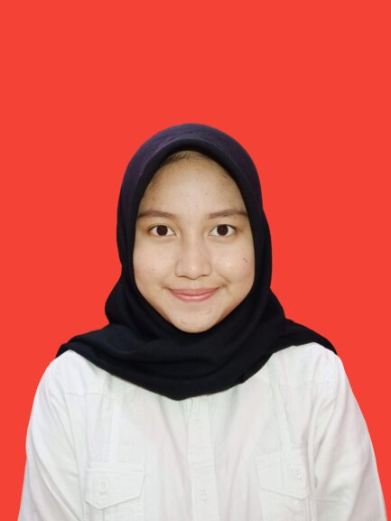

Profile

Name : Sofil Muna Aulia
Place, Date of Birth : Bogor, June 24 2002
Gender : Female
Nationality : Indonesia
Height, Weight : 163 cm, 49 kg
Religion : Islam
Marital Status : Not Married
Address : Jl.Sejahtera Ds.Leuwinutug Rt.03/Rw.01 No.21 Kec.Citeurep, Kab.Bogor Jawa Barat, 16810
Phone : 085719578715
Email : sofilaulia24@gmail.com
Education
| No |
School |
Place |
Year |
| 1. |
Primary School |
SDN Leuwinutug 03 |
2008-2014 |
| 2. |
Junior High School |
SMPN 01 Babakan Madang |
2014-2017 |
| 3. |
Senior High School |
SMAN 01 Citeureup |
2017-2020 |
| 4. |
University |
STT-Terpadu Nurul Fikri |
2020-now |
Experience
- Member Palang Merah Remaja (2015-2016)
- Member OSIS "Bhamad" (2016-2017)
- Member Paduan Seni Swara Puspa Yuwana (2017-2019)
- Coord.HUMAS "Student Creativity and Music 4" (2018)
- Member Yuwana Choir (2017-2019)
Other Skill
- Computer : Ms.Office (MS. Word, MS. exel, Ms. Power point) internet, Programming
- Github : sofilaulia
Award
- Universitas Djuanda Bogor : 1st Best Choir Team (2018)
- Universitas Indraprasta PGRI : 3st Best Choir Team (2019)